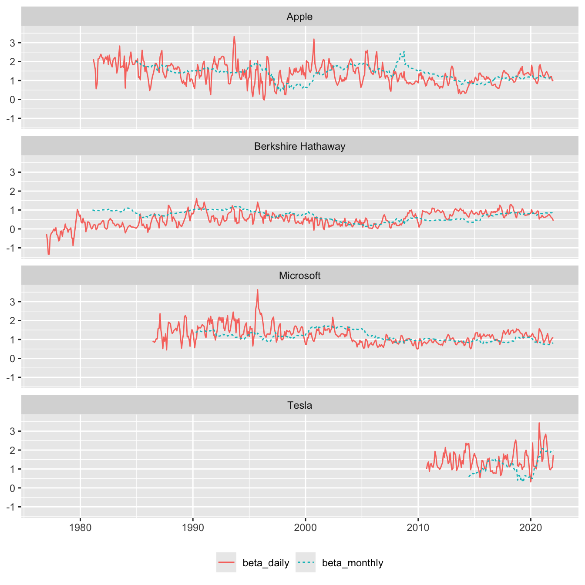

![]()
library(farr)
library(dbplyr, warn.conflicts = FALSE)
library(tidyverse)
library(DBI)
library(frenchdata)
library(arrow)
library(duckdb)Calculating betas using DuckDB
Tidy Finance
DuckDB
WRDS
Finance
Abstract
Calculating betas.
This note illustrates how DuckDB can be used to perform calculations with impressively high performance. The focus here is on the calculation of betas following the basic approach used in Tidy Finance.
While the code here is surprisingly elegant and fast given the amount of work it is doing, there are limitations. For example, calculating betas is easy because univariate regression is supported by DuckDB (and PostgreSQL), but multivariate regression (e.g., to calculate loadings for multi-factor models) would require a different approach.
It seems that some of the benefits seen here could be achieved if we could use user-defined functions (UDFs). While there is no support for UDFs in the R API, support for scalar UDFs is provided in the Python API and support for aggregate UDFs, which is what would be needed here, is on the DuckDB roadmap.1
The code in this note uses the following packages. Use install.packages() to install any that are not already on your system.
We will use the following small function to calculate the time taken for steps below.2
system_time <- function(x) {
print(system.time(x))
x
}1 Collecting data
The data we use combine Fama-French factor data and return data from CRSP. In Tidy Finance, the tables factors_ff3_monthly, crsp_monthly, factors_ff3_daily, and crsp_daily have been created and stored in previous chapters. Here we build these from scratch from source data.
1.1 Fama-French factor data
The following code is adapted from code in Tidy Finance.
fix_date <- function(date) {
date_c <- as.character(date)
ymd(if_else(nchar(date_c) == 6, str_c(date_c, "01"), date_c))
}
get_ff_factors <- function(id,
start_date = "1960-01-01",
end_date = "2021-12-31") {
ff_vars <- c("RF", "Mkt-RF", "SMB", "HML", "RMW", "CMA")
download_french_data(id)$subsets$data[[1]] |>
mutate(across(any_of(ff_vars), \(x) as.numeric(x) / 100),
date = fix_date(date)) |>
rename_with(str_to_lower) |>
rename(mkt_excess = `mkt-rf`) |>
filter(date >= ymd(start_date),
date <= ymd(end_date)) |>
mutate(month = floor_date(date, "month"))
}Collecting the Fama-French factor data (from the web) takes just a few seconds.
factors_ff3_monthly <- get_ff_factors("Fama/French 3 Factors")
factors_ff3_daily <-
get_ff_factors("Fama/French 3 Factors [Daily]") |>
system_time() user system elapsed
0.142 0.024 1.170 Note that the get_ff_factors() function is flexible enough to handle "Fama/French 5 Factors (2x3)" as an argument.
1.2 CRSP data
We will need data from two tables: crsp.msf and crsp.dsf. One option would be to connect to the WRDS PostgreSQL database for these:
db <- dbConnect(RPostgres::Postgres())
msf <- tbl(db, Id(table = "msf", schema = "crsp"))
dsf <- tbl(db, Id(table = "dsf", schema = "crsp"))However,it turns out that there is no efficient way to merge the Fama-French factor data we have above with those tables on the WRDS server due our inability to create temporary tables there.3 In fact, even with a local PostgreSQL database, we can do better if we have local parquet versions of crsp.msf and crsp.dsf (see here), and we assume that we have those in the rest of this note.
If we have our library set up, we can create an in-memory DuckDB database, and use load_parquet() from the farr package to load these tables in the database. Note that nothing is actually being read into memory at this point, so these steps take a few milliseconds.
db <- dbConnect(duckdb::duckdb())
msf <- load_parquet(db, "msf", "crsp")
dsf <- load_parquet(db, "dsf", "crsp") |> system_time() user system elapsed
0.006 0.000 0.007 1.3 Combining CRSP and Fama-French data
Now we can construct the tables used in Tidy Finance from merging CRSP and Fama-French factor data: crsp_monthly and crsp_daily. Again, because these queries are lazy, no material time is taken with these steps.
crsp_monthly <-
msf |>
filter(!is.na(ret)) |>
mutate(month = floor_date(date, "month")) |>
inner_join(factors_ff3_monthly, by = "month",
copy = TRUE,
suffix = c("", "_ff")) |>
mutate(
ret_excess = ret - rf,
ret_excess = pmax(ret_excess, -1, na.rm = TRUE)
) |>
select(permno, date, month, ret_excess, mkt_excess) |>
system_time() user system elapsed
0.041 0.003 0.051 crsp_daily <-
dsf |>
filter(!is.na(ret)) |>
inner_join(factors_ff3_daily, by = "date",
copy = TRUE) |>
mutate(ret_excess = ret - rf,
ret_excess = pmax(ret_excess, -1, na.rm = TRUE)) |>
system_time() user system elapsed
0.034 0.001 0.036 2 Calculating betas
I follow Tidy Finance in calculating both monthly and daily betas.
2.1 Monthly betas
In Tidy Finance, the slide_period_vec() function from the slider package is used to create 60-month windows with a minimum of 48 months being required. With either DuckDB or PostgreSQL, we can use window functions to achieve the same thing.
The Tidy Finance code uses lm() from R to calculate the slope of a regression of a stock’s excess returns on market excess returns. Both DuckDB and PostgreSQL offer the aggregate function regr_slope(y, x) that we can use as a window function. However, regr_slope(y, x) is not recognized as an aggregate function by dbplyr, so we need to write the SQL for the window ourselves.
There is some complexity in the construction of the window frame, but the documentation provided by PostgreSQL can help us to construct the right frame. In this case, it seems we want the range starting 60 months before the current row and the current row. We partition by permno and order by date. In dplyr, this would be group_by(permno) |> window_order(date), but in SQL, we use PARTITION BY and ORDER BY. In SQL, we define a window (w) and then write SELECT regr_slope(y, x) OVER w; we include the OVER in our variable w.
w <- paste("OVER (PARTITION BY permno",
"ORDER BY date",
"RANGE BETWEEN INTERVAL '60 MONTHS' PRECEDING AND",
"CURRENT ROW)")Having constructed our window, we can append the window to SQL for the aggregates we want to use. To impose the requirement minimum number of months, we calculate n_rets, which is the number of return values in our window w and impose a filter accordingly. Finally, we select just the variables we want.4
According to the Tidy Finance website, “using eight cores, the estimation for our sample of around 25k stocks takes around 20 minutes.” How long does our approach take? Less than a second! Note that DuckDB does multi-core processing out of the box, with no need to set up workers or such like.5
beta_monthly <-
crsp_monthly |>
mutate(beta = sql(paste("regr_slope(ret_excess, mkt_excess)", w)),
n_rets = sql(paste("count(ret_excess)", w))) |>
filter(n_rets >= 48) |>
select(permno, month, date, beta) |>
collect() |>
system_time() user system elapsed
2.381 0.130 0.407 2.2 Daily betas
Now, let’s do daily betas. Here Tidy Finance uses a three-month window and requires at last fifty observations. This requires only a minor tweak to our window definition.
w <- paste("OVER (PARTITION BY permno",
"ORDER BY date",
"RANGE BETWEEN INTERVAL '3 MONTHS' PRECEDING AND CURRENT ROW)")While daily data are used to calculate the betas, only one beta per PERMNO-month is returned. There are some ambiguities in my reading of Tidy Finance in terms of exactly which dates are used for each month, but I assume that daily returns for the three months up to the last day of the month are used. The code below actually calculates betas using three months of data for every stock for every day, but only keeps data for the last day of each month.
For Tidy Finance, “the whole estimation takes around 30 minutes using eight cores and 16GB memory.” With the approach here, it takes about 8 seconds. This is relatively worse than the monthly beta calculations, which I suspect is due to our calculations of betas for every day even though we don’t keep these.
beta_daily <-
crsp_daily |>
mutate(beta = sql(paste("regr_slope(ret_excess, mkt_excess)", w)),
n_rets = sql(paste("count(ret_excess)", w))) |>
filter(n_rets >= 50) |>
mutate(month = floor_date(date, "month")) |>
group_by(permno, month) |>
filter(date == max(date, na.rm = TRUE)) |>
ungroup() |>
select(permno, month, date, beta) |>
collect() |>
system_time() user system elapsed
58.516 6.514 6.669 This is pretty impressive given that we have calculated 4,251,711 betas!
At this point, DuckDB has done its work and we have the data in local data frames. So we can disconnect from our in-memory database.
dbDisconnect(db, shutdown = TRUE)2.3 Comparing beta estimates
The remaining code is largely copy-pasted from Tidy Finance. Our focus here is Figure 1, a version of Figure 4 from Tidy Finance that compares monthly and daily beta estimates for four stocks.
examples <- tribble(
~permno, ~company,
14593, "Apple",
10107, "Microsoft",
93436, "Tesla",
17778, "Berkshire Hathaway")Because we have retained date, we merge on that variable too when constructing beta.
beta <-
beta_monthly |>
full_join(beta_daily,
by = c("permno", "month", "date"),
suffix = c("_monthly", "_daily")) |>
arrange(permno, date)I have made no effort to do a detailed reconciliation of my calculations with those in Tidy Finance, but Figure 1 looks quite similar to the counterpart in Tidy Finance.
beta |>
inner_join(examples, by = "permno") |>
pivot_longer(cols = c(beta_monthly, beta_daily)) |>
filter(!is.na(value)) |>
ggplot(aes(
x = date,
y = value,
color = name,
linetype = name
)) +
geom_line() +
facet_wrap(~ company, ncol = 1) +
labs(x = NULL, y = NULL, color = NULL, linetype = NULL) +
theme(legend.position = "bottom")

3 Saving the data
We can save our data so we can use it in analysis from later chapters in Tidy Finance. Given we are assuming a parquet data repository, we save our data to that. For this purpose, we make a small function that builds on the structure described here.
save_parquet <- function(df, schema = "tidy_finance",
data_dir = Sys.getenv("DATA_DIR")) {
pq_dir <- file.path(data_dir, schema = schema)
if (!dir.exists(pq_dir)) dir.create(pq_dir)
pq_path <- file.path(pq_dir, str_c(deparse(substitute(df)), ".parquet"))
write_parquet(df, sink = pq_path)
}In effect, we save three tables to a tidy_finance schema:
save_parquet(beta)
save_parquet(factors_ff3_monthly)
save_parquet(factors_ff3_daily)Footnotes
Unlike the base R
system.time(), this function works with assignment. If we putsystem.time()at the end of a pipe, then the value returned bysystem.time()would be stored rather than the result of the pipeline preceding it. Hadley Wickham explained to me that this function works because of lazy evaluation, which is discussed in “Advanced R” here. Essentially,xis evaluated just once—insidesystem.time()—and its value is returned in the next line.↩︎As discussed here, the
copy_inline()function can often address this gap, but the complexity of the queries below seems too high for this to be a viable approach.↩︎While the
datevariable is omitted in Tidy Finance, we retain it, as in principle it facilitates merging of beta data with monthly CRSP data.↩︎My understanding is that this may be a function of writing DuckDB with C++11.↩︎